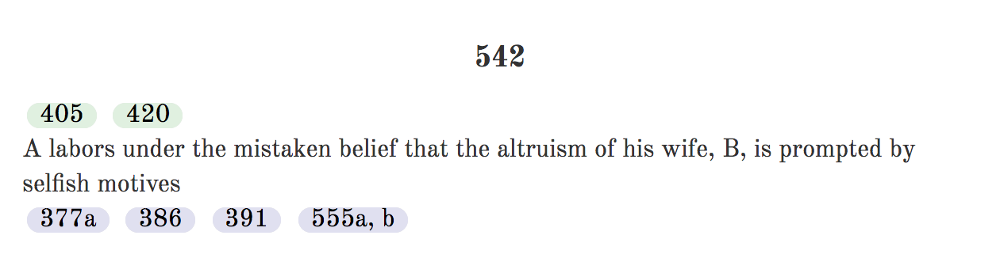
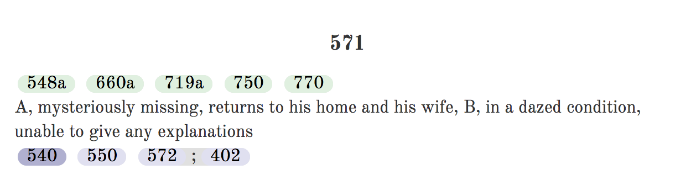
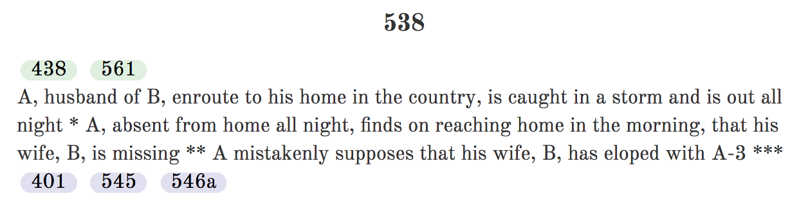
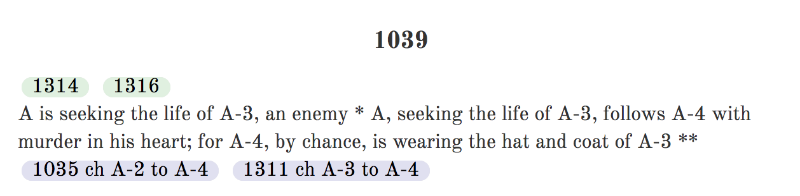

The writer’s guide
How to use Plotto
Plotto is a collection of situations and suggested connections. Use those connections to discover a story; adapt the characters, motives, and setting to suit your writing.
Build a masterplot
A masterplot has three clauses. The A clause describes the protagonist, the B clause starts and carries the action, and the C clause points toward an outcome. Clause letters describe parts of the story; character symbols A and B describe people.
- Choose one of 15 protagonist clauses, such as “A Person of Ideals.”
- Choose one of 62 action clauses, such as engaging in crafty enterprise for an unusual motive.
- Choose one of 15 outcome clauses, such as emerging from an ordeal with hard-won wisdom.
The B-clause index connects an action to its initial conflicts.
Use the generator
Choose a theme and character-role edition, then select Generate an outline. Open “Shape the masterplot” to choose clauses, or leave them open. Give A and B names if you want them used in the outline.
The generator selects a main conflict and follows its lead-up and carry-on suggestions. Compound suggestions can add more than one situation. Use “Try another” to replace a linked stage, or open the linked alternatives and choose one yourself. “New main conflict” keeps your protagonist and outcome clauses while finding a new starting situation.
Search the collection by number or words and choose “Start here” to build around a particular conflict. An explicit starting conflict takes precedence over the theme and action filters. Copy the outline, download a text file, or copy a link that restores the same suggestions, edition, and names.
The selected C clause is a writing direction. A carry-on may suggest that ending, or introduce another complication that you will need to resolve.
Read the connections
Suggestions above a conflict are lead-ups; those below it are carry-ons. For example, conflict 542 suggests 405 or 420 as a lead-up, and 377a, 386, 391, or 555a/b as a carry-on.

A semicolon means a sequence. Conflict 571 offers 572 followed by 402 as one compound carry-on. The word “or” introduces alternatives; the generator chooses one branch.

Use part of a conflict
Letters such as 538a identify variants. Stars divide a variant into sections: -* means from the beginning to the first star; *-** means between the first and second star. A suffix such as -2 selects the second numbered option, marked [2] in the text.

The generator applies these limits before displaying the selected suggestion. Missing subvariants or section limits are excluded from automatic selection; you can still examine their references in the book.
Adapt the cast
In the original edition, A is a male protagonist and B a female protagonist. A-2 is A’s male friend, A-3 a male rival, F-A A’s father, and M-A A’s mother. The character key explains the other symbols. The reversed-role edition changes gendered terms and family relationships throughout the text.
ch X to Y: replace X with Y.tr X & Y: swap X and Y.add X: include X as you develop the situation.eliminate X: remove the specified word or phrase.
Multiple character changes within one instruction are applied together, so changing A to A-8 and A-3 to A does not turn both people into A-8. Check pronouns and relationship descriptions as you adapt the cast. Instructions to add someone remain visible as notes because the book does not specify where that character should act.

About the source
William Wallace Cook published Plotto in 1928. Its language and depictions reflect that period, including racial prejudice and rigid gender roles. Both editions retain this material. Recast suggestions in terms that serve your story.
The digital text was cleaned by Gary Kacmarcik. Reference corrections in conflicts 139, 214, and 461 were verified against the original scans at the Internet Archive.